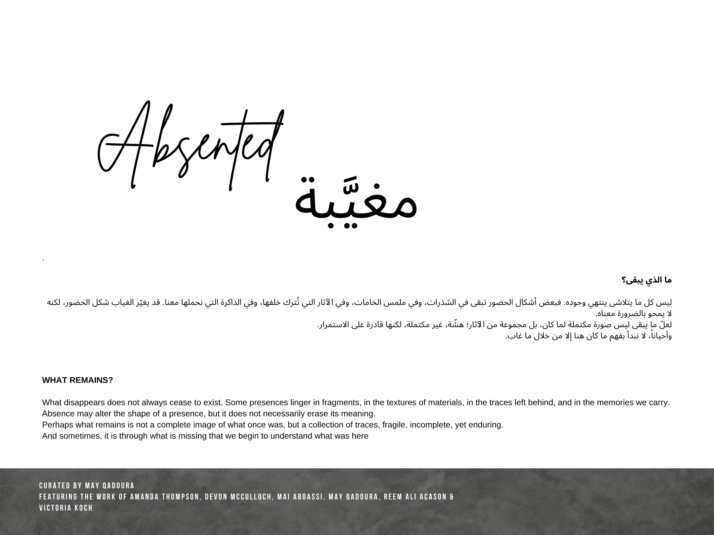

ما الذي يبقى؟
ليس كل ما يتلاشى ينتهي وجوده. فبعض أشكال الحضور تبقى في الشذرات، وفي ملمس الخامات، وفي الآثار التي تُترك خلفها، وفي الذاكرة التي نحملها معنا. قد يغيّر الغياب شكل الحضور، لكنه لا يمحو بالضرورة معناه. لعلّ ما يبقى ليس صورة مكتملة لما كان، بل مجموعة من الآثار؛ هشّة، غير مكتملة، لكنها قادرة على الاستمرار.
وأحياناً، لا نبدأ بفهم ما كان هنا إلا من خلال ما غاب.
WHAT REMAINS?
What disappears does not always cease to exist. Some presences linger in fragments, in the textures of materials, in the traces left behind, and in the memories we carry.
Absence may alter the shape of a presence, but it does not necessarily erase its meaning.
Perhaps what remains is not a complete image of what once was, but a collection of traces, fragile, incomplete, yet enduring.
And sometimes, it is through what is missing that we begin to understand what was here
Absented
